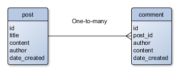
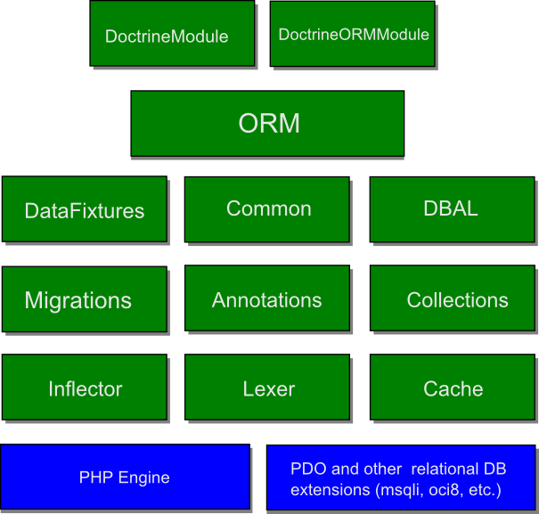
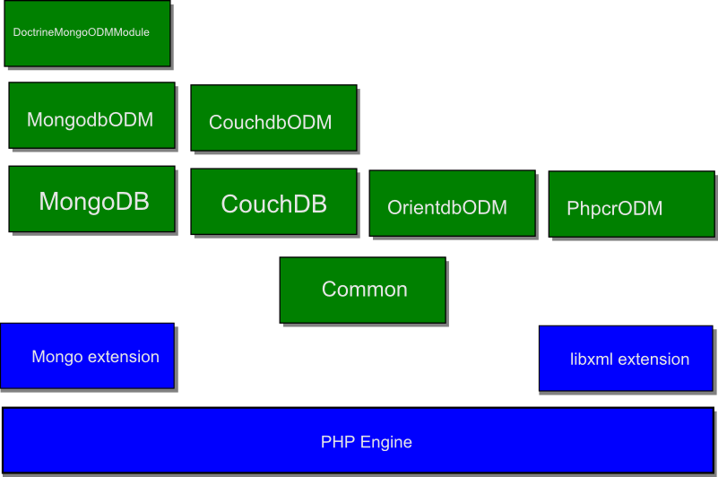

Appendix D. Introduction to Doctrine
In this appendix, we provide overview of the Doctrine library, such as its architecture and components. Since in this book we concentrate mainly on Doctrine's Object Relational Mapper (ORM) component, reading this appendix may give you the bigger picture of other Doctrine capabilities.
Doctrine and Database Management Systems
There are many database management systems (DBMS) on the market. Those systems can be divided into two groups: traditional relational databases utilizing SQL language for querying and manipulating data, and NoSQL databases utilizing "not only SQL" methods for accessing and managing the data. In each particular project you may prefer certain DBMS because of its capabilities and competitive advantages.
Relational Databases
In a relational database, you have a collection of tables (relations) consisting of rows. A row may have one or several columns. A row (or several rows) of a table may be linked to a row (or several rows) of another table, thus forming a relationship between data.
For example, assume you have a blog website whose database contains two tables: the post table
and the comment table. The post table would have columns named id, title, content, author, date_created;
and the comment table would have columns named id, post_id, author, content, and date_created.
The post table is related to comment table as one-to-many, because one post has zero or more (many) comments,
while a certain comment may belong to a single post only.
Graphically, the above mentioned tables, their columns and relationship are shown in figure D.1 below.

On the market, there is a number of major relational databases. Among them: SQLite, MySQL, PostgreSQL, Oracle, Microsoft SQL Server, etc.
Each database system has its own features specific to that DBMS and which are not part of other systems. For example:
-
SQLite is designed as an embed extension of PHP engine and doesn't require installation, however it works well for simple sites only;
-
MySQL is a free system which is very simple in installation and administration and good for using in systems varying from small to middle scale;
-
Commercial Oracle DBMS is mainly targeted on large-scale systems and has sophisticated administrative tools;
-
PostgreSQL supports indefinitely large databases and can be considered as an open-source replacement of Oracle.
Doctrine library is designed to work with all major databases using a unified programming interface. This programming interface is implemented in two levels:
-
At the lower level, Doctrine provides the unified mechanism for building SQL queries to any supported relational database and manipulating database schema. This mechanism is implemented in the Database Abstraction Layer (DBAL) component.
-
At the higher level, the Object Relational Mapper (ORM) component of Doctrine provides an ability to query and manage database data in object-oriented way, by mapping the tables to PHP classes. This component also provides its custom database query language called DQL allowing to build queries in object-oriented style.
Typically, you use the API provided by high-level ORM component. At the same time, you can easily work with lower-level DBAL component, if you find that more suitable for your particular needs.
Note
Doctrine is database-agnostic. In theory, when you use Doctrine you are able to abstract of database type and switch between databases more easily than when you use your database-dependent solution.
SQL vs. DQL
When using a relational database system, you typically use SQL language as a standard way for accessing database data and managing database schema. However, each DBMS usually has it own specific SQL language extensions (dialects).
Note
Doctrine library is designed to work with all major relational database systems that use SQL language, but it is obvious that it supports only some subset of their functionality and SQL language capabilities.
Doctrine is built on top of PHP PDO extension (and other database-specific PHP extensions, like sqlite, mysqli,
oci8, etc.). Those extensions provide drivers for all major relational database systems. You specify which
driver to use when configuring a database connection.
Need to learn SQL first?
If you are not familiar with SQL, a good point for learning its syntax is W3Schools Tutorials.
Since the Object Relational Mapper component of Doctrine is designed to work with objects instead of tables, it provides its own "object-oriented" query language called DQL 2. It is similar to SQL in sense that it allows to write and execute queries to database, but result of a query is an array of objects rather than an array of table rows.
NoSQL Databases
In contrast to a relational database system, a NoSQL database system - as its name assumes - uses a not-only-SQL method of accessing the data. This means that each NoSQL system may provide its own custom methods and API for accessing and manipulating the data. Technically, NoSQL databases can be divided in the following groups:
-
Document Store. A document database operates the concept of documents and their fields. This is useful, for example, if you have an hierarchical document tree in a content management (CMS) system. Documents are addressed in the database via a unique key that represents that document. One of the other defining characteristics of a document-oriented database is that, beyond the simple key-document lookup that you can use to retrieve a document, the database will offer an API or query language that will allow retrieval of documents based on their contents.
-
Column Store. Frequently used in web indexing. A column-oriented DBMS is a database management system that stores data tables as sections of columns of data rather than as rows of data. In comparison, most relational DBMSs store data in rows. This column-oriented DBMS has advantages for data warehouses, customer relationship management (CRM) systems, and library card catalogues, and other ad hoc inquiry systems where aggregates are computed over large numbers of similar data items.
-
Key-Value Store. This is the simplest data storage using unique keys for accessing certain data. Such database systems provide a simple key-value lookup mechanism.
-
and others.
Note
Doctrine provides support only to the Document Store subset of the NoSQL database systems. Column store and key-value store database systems typically have very specific field of applications, and not covered by Doctrine.
Document Databases
Doctrine supports a number of NoSQL document store databases: MongoDB, CouchDB, OrientDB and PHPCR.
For example, in a blog website, you would have a document named post and a document named comment.
The post document would have fields named id, title, content, author, date_created;
and the comment document would have fields named id, author, content and date_created. This
is very similar to the tables you would have in a relational database.
Note
In this book, we do not address the Doctrine-provided API to the NoSQL document databases. If you want to learn about these capabilities, please refer to the corresponding sections of Doctrine project documentation.
Doctrine Architecture
The Doctrine Project consists of several libraries (components). Each Doctrine component is distributed as a Composer-installable package and registered in Packagist.org catalogue. This is very similar to the way that Laminas Framework uses for installing its components.
Here we will provide you with a brief description of Doctrine library architecture to let you a general idea of its capabilities.
Components Supporting Relational Databases
Main Doctrine components designed for working with relational databases are shown in figure D.2 and marked with green. Blue blocks denote the PHP engine and PHP extensions Doctrine is built on top of.

As you can see from the figure, Doctrine is based on PHP engine features and on PHP extensions
that are actually used as drivers to particular database management systems. Above that base layer, there
are core Doctrine components (like Annotations, Common, etc.) providing essential functionality
for other top-level components. The DBAL component provides an abstraction layer of database type.
And on top of all that there is the ORM component providing API for working with data in object-oriented
way. DoctrineModule and DoctrineORMModule components are designed for integration with Laminas Framework.
Note
Doctrine ORM component uses the so called Data Mapper pattern. This pattern tells that a database table can be represented as a PHP entity class. The database in this pattern is considered as some kind of repository (storage of entities). When you retrieve an entity from the repository, an SQL query is performed internally, and an instance of the PHP entity class is constructed and its properties are filled with data.
By analogy with Laminas components, Doctrine component names consist of two parts: the vendor name ("Doctrine") and the component name (e.g. "Common"). Below, you can find the list of Doctrine components together with their Composer-installable package names and brief descriptions:
-
Doctrine\Common. Common Library for Doctrine projects. This component contains commonly used functionality. Its Composer-installable package name isdoctrine/common. -
Doctrine\Annotations. Docblock Annotations Parser. Its Composer-installable package name isdoctrine/annotations. -
Doctrine\Inflector. Common String Manipulations with regard to casing and singular/plural rules. Its Composer-installable package name isdoctrine/inflector. -
Doctrine\Lexer. Base library for a lexer that can be used in Top-Down, Recursive Descent Parsers. Its Composer-installable package name isdoctrine/lexer. -
Doctrine\Cache. Caching library offering an object-oriented API for many cache backends. Its Composer-installable package name isdoctrine/cache. -
Doctrine\DBAL. Database Abstraction Layer. This is a lightweight and thin runtime layer around a PDO-like API and a lot of additional, horizontal features like database schema introspection and manipulation through an object oriented API. Its Composer-installable package name isdoctrine/dbal. -
Doctrine\Collections. Collections Abstraction library. Its Composer-installable package name isdoctrine/collections. -
Doctrine\ORM. Object-Relational-Mapper for PHP. This is a Doctrine component providing a way to work with entity models in object-oriented way instead of raw SQL queries. Its composer installable package name isdoctrine/orm. -
Doctrine\Migrations. Database Schema migrations using Doctrine DBAL. Provides a consistent way to manage database schema and update it. Its composer installable package name isdoctrine/migrations. -
Doctrine\DataFixtures. Data Fixtures for all Doctrine Object Managers. Provides a framework for making database fixtures. Its composer installable package name isdoctrine/data-fixtures.
Since Doctrine uses PHP autoloading and PSR-4 standard, classes belonging to certain component live
in that component's namespace. For example, the EntityManager class belonging to Doctrine\ORM
component, lives in Doctrine\ORM namespace.
Components Supporting NoSQL Document Databases
Doctrine components designed for working with NoSQL document databases (MongoDB, CouchDB, etc.) are shown in figure D.3 and marked with green. Blue blocks denote the PHP engine and PHP extensions Doctrine is built on top of.

As you can see from the figure D.3, Doctrine NoSQL components are based on PHP engine features
and on PHP extensions that can be considered as "drivers" to particular database management systems.
Above that base layer, there are middle level components. The Common component is the same component that was shown in figure
D.2; it provides commonly used functionality. The MongoDB and CouchDB are components providing
low-level API to corresponding databases. The MongodbODM, CouchdbODM, OrientdbODM and PhpcrODM
components provide Object Document Mappers (ODM) for corresponding databases. ODM concept is very
similar to ORM in sense that it provides an ability to work with a NoSQL database in object oriented
way by mapping a document to a PHP entity class. The DoctrineMongoODMModule component is intended
for integration with Laminas.
Below, you can find the list of components together with their Composer-installable package names and brief descriptions:
-
Doctrine\MongoDBis Doctrine MongoDB Abstraction Layer. Its Composer-installable package name isdoctrine/mongodb. -
Doctrine\MongodbODM(Object Document Mapper) provides a way to map NoSQL documents to PHP entity models. Its Composer-installable package name isdoctrine/mongodb-odm. -
Doctrine\MongoODMModuleis Laminas Framework Module that provides Doctrine MongoDB ODM functionality. It serves for easy integration with Laminas. Its Composer-installable package name isdoctrine/doctrine-mongo-odm-module. -
Doctrine\CouchDBcomponent provides Simple API that wraps around CouchDBs HTTP API. Its Composer-installable package name isdoctrine/couchdb. -
Doctrine\CouchdbODMcomponent is CouchDB Document Object Mapper. It is analogous to Doctrine ORM in sence that it provides the way to access database in object oriented way. Its Composer-installable package name isdoctrine/couchdb-odm. -
Doctrine\OrientdbODMis a set of PHP libraries in order to use OrientDB from PHP. Its Composer-installable package name isdoctrine/orientdb-odm. -
Doctrine\PhpcrODMis Object-Document-Mapper for PHPCR. Its Composer-installable package name isdoctrine/phpcr-odm.
Summary
In this appendix, we've provided the overview of Doctrine library architecture and components. Doctrine is a large project consisting of multiple components mainly targeted on data persistence.
On the market, there are two big groups of database management systems: traditional relational databases and so called NoSQL databases. Although most relational databases use SQL language for querying and manipulating data, each particular database system has its own specific features. The same thing can be seen with NoSQL databases, where each system provides its own custom method for accessing data. Doctrine is designed to work with data in database-agnostic way by providing sophisticated abstraction layers.
The most useful component of Doctrine, Object Relational Mapper (ORM) is designed to let the developer an ability to work with data in object oriented way. This is when instead of writing an SQL query, you load an entity object (or an array of entity objects) from a repository. With this approach, a database table is mapped to a PHP class (also called an entity), and a row from that table is mapped to an instance of that entity class.
-
The PHP Data Objects (PDO) extension defines a lightweight, consistent interface for accessing databases in PHP. To make it in database-agnostic way, PDO uses the concept of database drivers. Each database driver that implements the PDO interface can expose database-specific features as regular extension functions. ↩
-
DQL stands for Doctrine Query Language. ↩